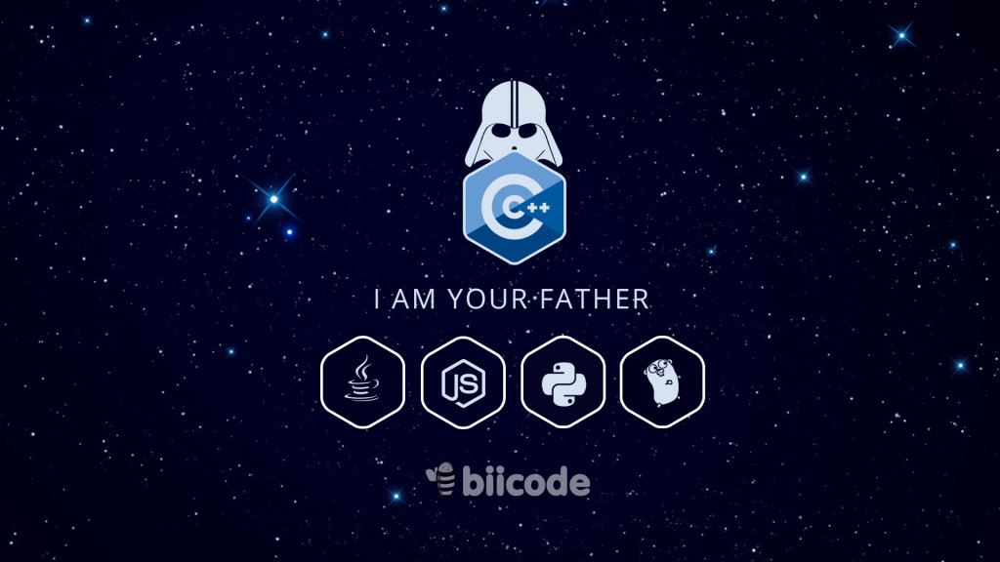

Because not only CPU cycles count, but also developers’ time
There are approximately 4 million C and C++ programmers in the world, probably the largest community, with about 20% of the market, which is comparable or even larger than Java (both C and C++ together). They are also by far the oldest languages of the current mainstream ones, used in key industries and even increasingly due to synergies with other fields as the IoT/embedded systems or robotics, in which these languages are important.
C++ is a great language, and it is improving faster than ever with the recent 11 and 14 standards, and 17 is very promising too. It is amazing how the syntax is becoming closer and closer to other more “modern” languages as python. And C is the solid foundation of most current IT technology. State of the art compilers, optimizers, debuggers and IDEs for C and C++ are excellent.

C and C++ make up to 20% of the world code
But then, one day you want to write some simple portable and reusable code that is able to send Hello World characters over a serial port.
Ask a pythonist. He will write $ pip install pyserial, and in a few minutes he will have the solution.
Ask a C++ dev. The first surprise is that there is no such pyserial equivalent in C++. And C++ is allegedly very good at low level. The closest thing could be the serial port inside Boost.Asio (which is the most voted answer in StackOverflow), but just downloading Boost could take more time than the python solution, and it also requires the serial port to be used in an asynchronous framework, which is probably overkill for this task. The proof is that hundreds of files will typically be included in this simple job. Furthermore the C++ coder will typically have to manually introduce the include paths or equivalent in their project.
In contrast, the python pyserial has a few files, and the funniest thing is that most part of it is actually written in simple C. Creating a reusable component for this serial “Hello World” will take even more effort, and the process of installing Boost will have to be repeated on every new computer.
In no way I pretend to say that Boost is bad code, it is brilliant, but it is clear that in the C and C++ development processes large inefficiencies are still present.
The motto don’t pay for what you don’t use is certainly true in terms of the potential of the languages and the achievable computational resources efficiency, but totally misleading in terms of the development process. This process is less efficient in C and C++ compared to other languages. And C++ is the highest-paying programming language. This means, in C and C++ we, as developers, have to pay for a precious time that does not generate value into our products, wasted time that creates a competitive disadvantage with respect to our colleagues or ourselves developing in other languages.
So the biggest problem is not languages themselves, but the development tools and ecosystem around them. First, the build system is a complete diaspora of different compilers with different options and libraries, but what is worst, different build systems not only among OSs, but also among compilers.
Fortunately in this case CMake comes to the rescue. It is not strictly a build system, but a layer over them, generating native builds for different targets. CMake is the de-facto standard for multi-OS projects, and it is also getting more adoption even for single OS projects. It is mature and powerful, and keeps improving very fast. New projects as the cool CLion IDE, directly use CMake as the only supported build system, and it is a good approach. Although the scripting syntax could be better, the consensus is far more important than any other factor, and I think that the C and C++ communities’ universal adoption of CMake would be a great win for everybody, and pray to the God of Bits to find a CMakeLists.txt in every project.
Secondly but even more important is the lack of a C and/or C++ dependency manager. Python has pip, Java has Maven, Node has NPM, Ruby has bundler, Go has get, Rust has cargo… And no, apt or similar are not dependency managers, otherwise those languages wouldn’t feature their own dependencies managers. This will be the ultimate cause of the sunset of C and C++ languages, which will be reduced to the very core components in a few years, just as assembler is today.
The real menace: Rust and Go
Because interpreted and dynamic languages keep evolving, virtual machines and advances in JIT compiling are producing amazing results in terms of speed, as in PyPy, and some of the best technologies that support the C and C++ ecosystems as LLVM also nurture those languages tools. But the real menace comes from modern compiled languages like Go or Rust, which have the advantages of decades of learning in computing languages and no legacy codebases to keep supporting. Not only for the language syntax itself, which can have very convenient features (easy, concurrency, safety…) but also for the ease with which dependencies are managed. Simple deps management creates virtuous circles with exponential growths. You can easily build with Rust or Go apps, libraries or systems, just by declaring or importing the GUI, network, AI, graphics, server, serialization, ORM libraries, etc., you want to integrate in your project. Despite C or C++ could hypothetically get further performance, setting up an equivalent project can take much, much longer to complete in C or C++.
No matter how much the languages are improved, as long as this problem is not fixed, future looks gloomy for my beloved C and C++ languages. Develop an ecosystem in which this is possible, and they will not only not decline, but even take over in less traditional domains such as web apps and mobile.
If you have read so far, you are most probably a smart developer, and you have realized that this post is on biicode’s blog during our open source challenge, and this post is nothing but f***ing marketing with an intended-to-be catchy title to get your attention. I am sorry, it is. However the above still holds true, I meant every word, the menace is real, and I am not trying to cheat you by saying that biicode is the solution or the lifesaver of the C and C++ languages. It is marketing about a team of people really committed to try to help in the development of whatever the C and C++ communities require.
We have been doing large improvements in biicode versions from 1.0 to 2.7, based on your feedback: plain-text configuration, flexible project layouts, avoid modifications of #includes… you name it, we do our best to address it.
And you have consistently requested it to be Open Source, that is why, after negotiating with our investors we launched our challenge. With this announcement and the latest improvements based on your feedback biicode is finally gaining a decent traction and we got our first clients even before launching the premium accounts publicly. But it could certainly improve even faster with your help.

So this is why I am proposing the board this Friday to directly start to be open-source, encouraged by our growing metrics and your support. Want to help me and see biicode start going open source in early April? Register in biicode and/or (anonymous usage possible too) download it, try the getting started and give feedback, and spread the word as much as possible.
UPDATE: While writing this post, Google open sourced Bazel and went top in Hacker News. This is good news, and a hint that the ecosystem is looking for more open source development tools that tackle mainly the build and dependencies problems.
Related Posts
Pingback: Visto nel Web – 176 | Ok, panico()